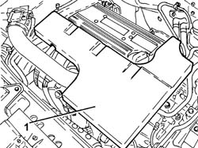
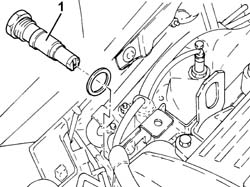
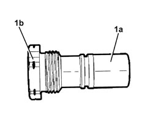
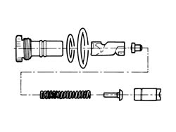
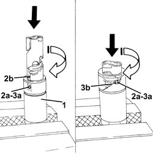
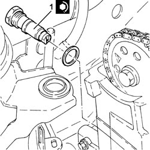
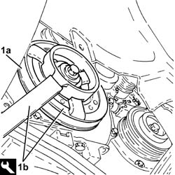

1032C33 TIMING SYSTEM FIXED HYDRAULIC TENSIONER - R R
- Path
- Procedures > 10 ENGINE > 1032 TIMING SYSTEM > 1032C TIMING SYSTEM TENSIONERS > 1032C33 TIMING SYSTEM FIXED HYDRAULIC TENSIONER - R R
- Kind
- repair procedure (removal / refitting; the operation number is the code)
- Applies to
- engines: 2.2; all production periods
- Interactive page
- https://sloeber94.github.io/elrnDB-fCrm/en/#/194000273
Applies to: engines: 2.2; all production periods
 Removing
Removing
 Refitting
Refitting- Position the vehicle on a lift.
1. Remove the sound insulation cover fastened to the engine by three pins.

Applies to: engines: 2.2; all production periods
1. Unscrew the timing system hydraulic tensioner and remove.

Applies to: engines: 2.2; all production periods
1. If no mark (1b) is present on the timing system fixed hydraulic tensioner (1a), replace the tensioner with a new unit, including a new chain tensioner mobile pad.

Applies to: engines: 2.2; all production periods
- The following drawing shows a breakdown of the timing system fixed hydraulic tensioner.

Applies to: engines: 2.2; all production periods
Refitting
Removing- Before the timing system fixed hydraulic tensioner can be refitted, it must be preloaded as described below.
1. Position the piston in a vice with protective jaws, holding by the square end.
2. Insert the piston into the tensioner case, press and turn as shown in the figure until pin (2a) fits into groove (2b).
3. Press and then turn the piston until pin (3a) fits into groove (3b).
- Fit the newly assembled piston into the tensioner casing.

Applies to: engines: 2.2; all production periods
1. Refit the timing system hydraulic tensioner into its seat and tighten to the specified torque.
Component | Fastening | dia | Value (daNm) | Validity |
|---|---|---|---|---|
Timing fixed hydraulic tensioner | - | M27 x 2 | 7.5 | 2.2 |

Applies to: engines: 2.2; all production periods
Op. 4450B04 RIGHT FRONT WHEEL - R.R
Op. 7055B66 ENGINE COMPARTMENT DUST COVER IN RIGHT FRONT WHEEL ARCH - R.R.
1. Move the timing system hydraulic tensioner to operating position by turning the crankshaft pulley (1a) quickly anticlockwise using tool (1b).
Tool | Description | Function | Validity |
|---|---|---|---|
2000001000 | Counter-torque | Loosen/tighten crankshaft pulley fixing bolt | 2.2 |

Applies to: engines: 2.2; all production periods
Op. 7055B66 ENGINE COMPARTMENT DUST COVER IN RIGHT FRONT WHEEL ARCH - R.R.
Op. 4450B04 RIGHT FRONT WHEEL - R.R
- Place the sound insulation cover back in its housing and secure it to the engine using the three pins.
- Remove the vehicle from the lift.